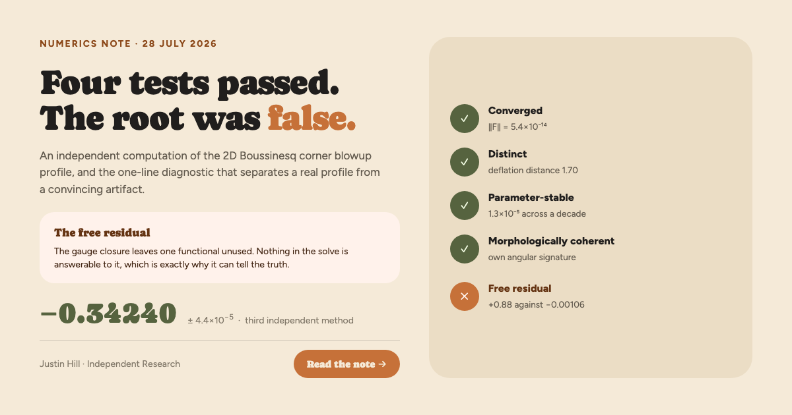

The 2D Boussinesq corner blowup profile
Four convergence tests passed. The root was false.
Justin Hill, Independent Research. An independent computation of the self-similar profile underlying the Luo and Hou scenario for 3D axisymmetric Euler with boundary, solved as a root problem with an explicit sparse Jacobian rather than by marching or neural approximation.
Deflated multistart at a frozen unstable exponent returned a state that satisfied every check the campaign had been applying. Under grid refinement its exponent moved away from its target with growing steps. It has no continuum limit.
The gauge closure fixes two corner constants and leaves the corner identity c_l = 2Θxx / Wx unused. Reporting that leftover beside every converged solve costs one line of output and separates the cases the other four tests could not. Residual, distinctness, parameter stability and morphological coherence are jointly insufficient to certify a self-similar profile.
The exponent
Chen and Hou solve this profile by adaptive-mesh march (arXiv:2210.07191, arXiv:2305.05660). Wang and collaborators solve it with a physics-informed network refined by Gauss-Newton (arXiv:2509.14185). They share no discretization and agree to 3.4×10−7, which is why their value is treated here as reference rather than competitor.
Three extrapolation families fit the ladder with residuals five points cannot separate. Their spread sets the bar, added in quadrature with the measured corner-degree systematic. Quoting the deepest three rungs alone would report agreement at 2.5×10−6. That number is not quoted, because choosing the subset that tightens the bar is the same error as choosing the model family that does.
Independence is not total, and the note states the exception in its abstract. Two scalar corner constants are read off the reference profile and imposed as gauge targets. Freeing one moves the exponent by 9.7×10−5, about twice the bar. The claim is independence of method, not of data.
| Axis | Worst effect on the exponent | Standing |
|---|---|---|
| Angular resolution, 36 to 48 | 1.16×10−8 | closed |
| Seed provenance, reference to three analytic | 9.65×10−8 | closed |
| Far-field truncation, 25 to 32 | 1.45×10−10 | closed · grids verified to differ |
| Corner degree, 24 to 28 | 1.94×10−5 | carried in the bar |
| Corner degree, 16 to 24 | 6.98×10−4 | not converged at 16 |
| Wedge truncation | extrapolated, layer analysed | carried in the bar |
What went wrong on the way
An adversarial verification pass re-sourced every number in the draft against its log. It found three things worth publishing alongside the result.
Four retractions made during the work are recorded in the note rather than removed, including a spectral mode built on unconverged eigenvalues and a corner-angle derivative withdrawn when its slope proved formulation-dependent. The claims ledger grades every statement in the paper against its evidence, and no claim appears in the paper above its grade there.
Still open
The unstable branches remain unconfirmed by any method other than the network that found them. The route attempted here produced the artifact above. Treating the exponent as a Newton unknown on the untruncated problem is the next attempt, and it is not built.
A geometric reading of the published branch gaps puts the family's accumulation point at −1/2, the classical Leray exponent, and predicts a fourth branch near −0.4649. The network's own empirical law gives −0.46557 for the same branch. Both are extrapolations over the same four numbers, and nobody has measured the fourth reliably yet.
The image social platforms show for this page. 1200×630.
{kind=link}
